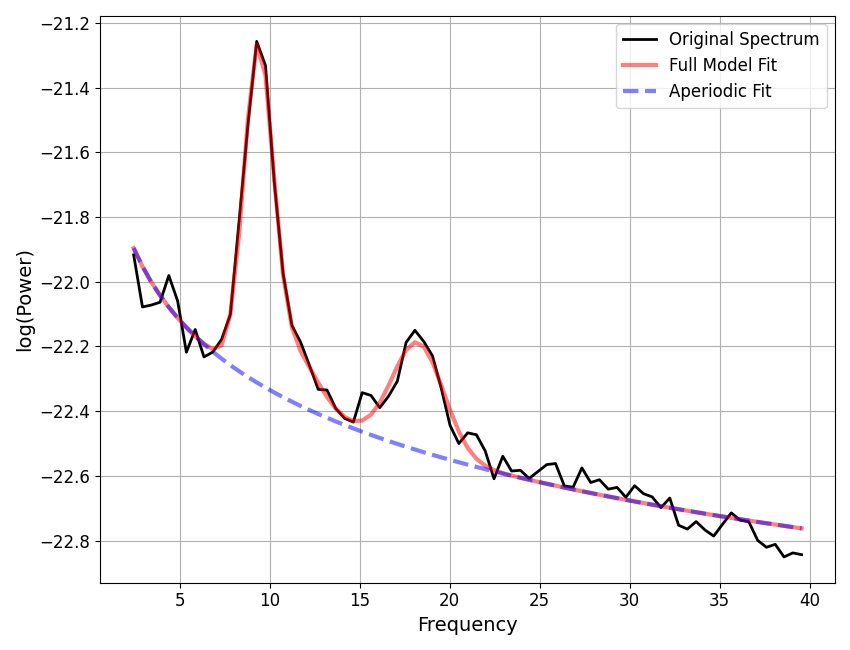

Note
Go to the end to download the full example code.
Custom Parameter Conversions¶
This example covers defining and using custom parameter post-fitting conversions.
from specparam import SpectralModel
from specparam.utils.download import load_example_data
# Import the default set of parameter conversions
from specparam.convert.definitions import check_converters, DEFAULT_CONVERTERS
# Import objects to define parameter conversions
from specparam.convert.converter import PeriodicParamConverter, AperiodicParamConverter
Parameter Conversions¶
After model fitting, a model object includes the parameters for the model as defined by the fit modes and as arrived at by the fit algorithm. These fit parameters define the model fit, as visualized, for example, by the ‘full model’ fit, when plotting the model.
However, these ‘fit’ parameters are not necessarily defined in a way that we actually want to analyzed. For this reason, spectral parameterization supports doing post-fitting parameter conversions, whereby after the fitting process, conversions can be applied to the fit parameters.
Let’s first explore this with an example model fit.
# Load example spectra
freqs = load_example_data('freqs.npy', folder='data')
powers = load_example_data('spectrum.npy', folder='data')
# Define fitting fit range
freq_range = [2, 40]
# Initialize and fit an example model
fm = SpectralModel()
fm.report(freqs, powers, freq_range)

WARNING: Lower-bound peak width limit is < or ~= the frequency resolution: 0.50 <= 0.49
Lower bounds below frequency-resolution have no effect (effective lower bound is the frequency resolution).
Too low a limit may lead to overfitting noise as small bandwidth peaks.
We recommend a lower bound of approximately 2x the frequency resolution.
==================================================================================================
POWER SPECTRUM MODEL
The model was fit with the 'spectral_fit' algorithm
Model was fit to the 2-40 Hz frequency range with 0.49 Hz resolution
Aperiodic Parameters ('fixed' mode)
(offset, exponent)
-21.6185, 0.7160
Peak Parameters ('gaussian' mode) 3 peaks found
CF: 9.36, PW: 1.04, BW: 1.59
CF: 11.17, PW: 0.23, BW: 2.88
CF: 18.25, PW: 0.33, BW: 2.85
Model metrics:
error (mae) is 0.0356
gof (rsquared) is 0.9829
==================================================================================================
In the above, we see the model fit, and reported parameter values.
Let’s further investigate the different versions of the parameters: ‘fit’ and ‘converted’.
# Check the aperiodic fit & converted parameters
print(fm.results.get_params('aperiodic', version='fit'))
print(fm.results.get_params('aperiodic', version='converted'))
[-21.61849957 0.7160227 ]
[nan nan]
In the above, we can see that there are fit parameters, but there is no defined converted version of the parameters, indicating that there are no conversions defined for the aperiodic parameters.
# Check the periodic fit & converted parameters, for an example peak
print(fm.results.get_params('periodic', version='fit')[1, :])
print(fm.results.get_params('periodic', version='converted')[1, :])
[11.1723471 0.16897043 1.43846854]
[11.1723471 0.23008765 2.87693709]
In this case, there are both fit and converted versions of the parameters, and they are not the same!
There are defined periodic parameter conversions that are being done. Note also that it is the converted versions of the parameters that are printed in the report above.
Default Converters¶
To see what the conversions are that are being defined, we can examine the set of DEFAULT_CONVERTERS, which we imported from the module.
# Check the default model fit parameters
DEFAULT_CONVERTERS
{'aperiodic': {'offset': None, 'exponent': None}, 'periodic': {'cf': None, 'pw': 'log_sub', 'bw': 'full_width'}}
Change Default Converters¶
Next, we can explore changing which converters we use.
To start with a simple example, let’s turn off all parameter conversions.
Note that as a shortcut, we can get a parameter definition from the Modes sub-object that is part of the model object, specified to return a dictionary.
# Get a dictionary representation of current parameters
null_converters = fm.modes.get_params('dict')
null_converters
{'aperiodic': {'offset': None, 'exponent': None}, 'periodic': {'cf': None, 'pw': None, 'bw': None}}
# Initialize & fit a new model with null converters
fm1 = SpectralModel(converters=null_converters)
fm1.report(freqs, powers, freq_range)

WARNING: Lower-bound peak width limit is < or ~= the frequency resolution: 0.50 <= 0.49
Lower bounds below frequency-resolution have no effect (effective lower bound is the frequency resolution).
Too low a limit may lead to overfitting noise as small bandwidth peaks.
We recommend a lower bound of approximately 2x the frequency resolution.
==================================================================================================
POWER SPECTRUM MODEL
The model was fit with the 'spectral_fit' algorithm
Model was fit to the 2-40 Hz frequency range with 0.49 Hz resolution
Aperiodic Parameters ('fixed' mode)
(offset, exponent)
-21.6185, 0.7160
Peak Parameters ('gaussian' mode) 3 peaks found
CF: 9.36, PW: 0.98, BW: 0.79
CF: 11.17, PW: 0.17, BW: 1.44
CF: 18.25, PW: 0.33, BW: 1.42
Model metrics:
error (mae) is 0.0356
gof (rsquared) is 0.9829
==================================================================================================
In the above no parameter conversions were applied!
# Check that there are no converted parameters - should all be nan
print(fm1.results.get_params('aperiodic', version='converted'))
print(fm1.results.get_params('periodic', version='converted'))
[nan nan]
[[nan nan nan]]
Next, we can explore specifying to use different built in parameter conversions.
To do so, we can explore the available options with the
check_converters() function.
# Check the available aperiodic parameter converters
check_converters('aperiodic')
Available aperiodic converters:
offset
exponent
# Check the available periodic parameter converters
check_converters('periodic')
Available periodic converters:
cf
pw
log_sub Convert peak height to be the log subtraction of full model and aperiodic component.
log_div Convert peak height to be the log division of full model and aperiodic component.
lin_sub Convert peak height to be the linear subtraction of full model and aperiodic component.
lin_div Convert peak height to be the linear division of full model and aperiodic component.
bw
full_width Convert peak bandwidth to be the full, two-sided bandwidth of the peak.
Now we can select different conversions from these options.
# Take a copy of the null converters dictionary
selected_converters = null_converters.copy()
# Specify a different
selected_converters['periodic']['pw'] = 'lin_sub'
# Initialize & fit a new model with selected converters
fm2 = SpectralModel(converters=selected_converters)
fm2.report(freqs, powers, freq_range)

WARNING: Lower-bound peak width limit is < or ~= the frequency resolution: 0.50 <= 0.49
Lower bounds below frequency-resolution have no effect (effective lower bound is the frequency resolution).
Too low a limit may lead to overfitting noise as small bandwidth peaks.
We recommend a lower bound of approximately 2x the frequency resolution.
==================================================================================================
POWER SPECTRUM MODEL
The model was fit with the 'spectral_fit' algorithm
Model was fit to the 2-40 Hz frequency range with 0.49 Hz resolution
Aperiodic Parameters ('fixed' mode)
(offset, exponent)
-21.6185, 0.7160
Peak Parameters ('gaussian' mode) 3 peaks found
CF: 9.36, PW: 0.00, BW: 0.79
CF: 11.17, PW: 0.00, BW: 1.44
CF: 18.25, PW: 0.00, BW: 1.42
Model metrics:
error (mae) is 0.0356
gof (rsquared) is 0.9829
==================================================================================================
In the above, the converted and reported parameter outputs used the specified conversions!
Create Custom Converters¶
Finally, let’s explore defining some custom parameter conversions.
To do so, for any parameter that we wish to define a conversion for, we can define a callable that implements our desired conversion.
In order for specparam to be able to use the callable, they must follow properties:
for aperiodic component conversions : callable should accept inputs fit_value and model
for periodic component conversions: callable should accept inputs fit_value, model, and peak_ind
# Take a copy of the null converters dictionary
custom_converters = null_converters.copy()
To start with, let’s define a simple conversion for the aperiodic exponent to convert the fit value into the equivalent spectral slope value (the negative of the exponent value).
To define this simple conversion we can even use a lambda function.
# Create a custom exponent converter as a lambda function
custom_converters['aperiodic']['exponent'] = lambda param, model : -param
Let’s also define a conversion for a periodic parameter. As an example, we can define a conversion of the fit center frequency value that finds and update to the closest frequency value that actually occurs in the frequency definition. For this case, we will implement conversion function.
# Import utility function to find nearest index
from specparam.utils.select import nearest_ind
# Define a function to update the center frequency
def update_cf(fit_value, model, peak_ind):
"""Updates center frequency to be closest existing frequency value."""
f_ind = nearest_ind(model.data.freqs, fit_value)
new_cf = model.data.freqs[f_ind]
return new_cf
# Add the custom cf converter function to function collection
custom_converters['periodic']['cf'] = update_cf
Now we have defined our custom converters, we can use them in the fitting process!
# Initialize & fit a new model with custom converters
fm3 = SpectralModel(converters=custom_converters)
fm3.report(freqs, powers, freq_range)

WARNING: Lower-bound peak width limit is < or ~= the frequency resolution: 0.50 <= 0.49
Lower bounds below frequency-resolution have no effect (effective lower bound is the frequency resolution).
Too low a limit may lead to overfitting noise as small bandwidth peaks.
We recommend a lower bound of approximately 2x the frequency resolution.
==================================================================================================
POWER SPECTRUM MODEL
The model was fit with the 'spectral_fit' algorithm
Model was fit to the 2-40 Hz frequency range with 0.49 Hz resolution
Aperiodic Parameters ('fixed' mode)
(offset, exponent)
-21.6185, -0.7160
Peak Parameters ('gaussian' mode) 3 peaks found
CF: 9.28, PW: 0.00, BW: 0.79
CF: 11.23, PW: 0.00, BW: 1.44
CF: 18.07, PW: 0.00, BW: 1.42
Model metrics:
error (mae) is 0.0356
gof (rsquared) is 0.9829
==================================================================================================
In the above report, our custom parameter conversions were used.
Parameter Converter Objects¶
In the above, we defined custom parameter converters by directly passing in callables that implement our desired conversions. As we’ve seen above, this works to pass in conversions
However, only passing in the callable is a bit light on details and description. If you
want to implement parameter conversions using an approach that keeps track of additional
description of the approach, you can use the
AperiodicParamConverter and
PeriodicParamConverter objects to
# Define the exponent to slope conversion as a converter object
exp_slope_converter = AperiodicParamConverter(
parameter='exponent',
name='slope',
description='Convert the fit exponent value to the equivalent spectral slope value.',
function=lambda param, model : -param,
)
# Define the center frequency fixed frequency converter as a converter object
cf_fixed_freq_converter = PeriodicParamConverter(
parameter='cf',
name='fixed_freq',
description='Convert the fit center frequency value to a fixed frequency value.',
function=update_cf,
)
# Take a new copy of the null converters dictionary & add
custom_converters2 = null_converters.copy()
custom_converters['aperiodic']['exponent'] = exp_slope_converter
custom_converters2['periodic']['cf'] = cf_fixed_freq_converter
Same as before, we can now use our custom converter definitions in the model fitting process.
# Initialize & fit a new model with custom converters
fm4 = SpectralModel(converters=custom_converters2)
fm4.report(freqs, powers, freq_range)

WARNING: Lower-bound peak width limit is < or ~= the frequency resolution: 0.50 <= 0.49
Lower bounds below frequency-resolution have no effect (effective lower bound is the frequency resolution).
Too low a limit may lead to overfitting noise as small bandwidth peaks.
We recommend a lower bound of approximately 2x the frequency resolution.
==================================================================================================
POWER SPECTRUM MODEL
The model was fit with the 'spectral_fit' algorithm
Model was fit to the 2-40 Hz frequency range with 0.49 Hz resolution
Aperiodic Parameters ('fixed' mode)
(offset, exponent)
-21.6185, -0.7160
Peak Parameters ('gaussian' mode) 3 peaks found
CF: 9.28, PW: 0.00, BW: 0.79
CF: 11.23, PW: 0.00, BW: 1.44
CF: 18.07, PW: 0.00, BW: 1.42
Model metrics:
error (mae) is 0.0356
gof (rsquared) is 0.9829
==================================================================================================
Adding New Parameter Conversions to the Module¶
As a final note, if you look into the set of ‘built-in’ parameter conversions that are available within the module, you will see that these are defined in the same way as done here, using the conversion objects introduced above. The only difference is that they are defined within the module and therefore can be accessed via their name, as a shortcut, rather than the user having to pass in their own full definitions.
This also means that if you have a custom parameter conversion that you think would be of interest to other specparam users, once the ParamConverter object is defined it is quite easy to add this to the module as a new default option. If you would be interested in suggesting a mode be added to the module, feel free to open an issue and/or pull request.
Total running time of the script: (0 minutes 0.961 seconds)